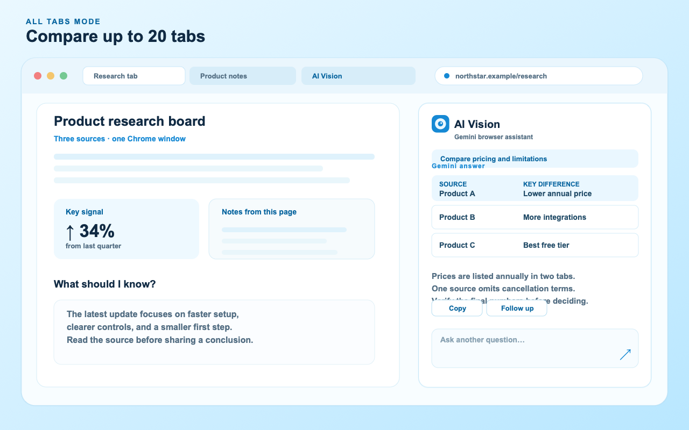

How to compare Chrome tabs with Gemini
When the answer is spread across several sources, AI Vision's All Tabs mode can compare supported pages in one Chrome window. Give the comparison a decision to support, ask for a traceable format, and keep the final check in your hands.
Updated · AI Vision 2.5

Prepare a comparison set
Install AI Vision from the Chrome Web Store, add your Gemini API key in Settings, and open the sources you want to compare. A small, relevant set produces a clearer answer than a window full of unrelated tabs.
- Keep the sources in one Chrome window. All Tabs can inspect up to 20 supported HTTP or HTTPS pages in the starting window.
- Open AI Vision from the toolbar, right-click menu, or Alt + Shift + V.
- Open More modes and tools, choose All Tabs, and grant the optional page-reading permission when prompted.
- State the decision, fields, and output format you need. Ask Gemini to name the tab title for each claim and identify gaps.
Comparison prompts for everyday research
Tell Gemini what “better” means before asking it to compare. These examples keep the result useful and checkable:
“Compare the pricing, contract term, and cancellation policy across these tabs. Use one row per source, preserve exact numbers, and mark anything missing.”
“Which research source best supports a beginner-friendly explanation? Give three reasons, cite each tab title, and separate evidence from your recommendation.”
“Build a decision table for these project plans: goal, timeline, dependency, risk, and next action. Do not infer a date that a tab does not state.”
For a second pass, ask “What do these sources disagree about?” or “Which claim needs a primary source?” Comparison is most valuable when it surfaces differences, not just when it produces a blended summary.
Review the result like a research note
All Tabs is a synthesis aid. Open the source tab before relying on a number, quote, or recommendation. Keep the source title and URL with the copied answer, and ask for uncertainty when pages conflict. A long or dynamic page may expose only the content that has rendered and is available to the extension.
Optional Agent Mode for a bounded next step
If the comparison suggests a simple browser task, you can enable Agent Mode in All Tabs. Reading, waiting, scrolling, and switching to an existing in-scope tab can continue automatically. Clicks, typing, direct navigation, opening a new tab, going back or forward, and reloading pause for explicit approval. Passwords, payments, sign-ins, uploads, publishing, deletion, legal acceptance, and similar sensitive actions are blocked.
Privacy and availability
AI Vision sends the prompt and page context required for the request directly to Google's Gemini API with the key you provide. The key is stored locally by the service worker; there is no developer-operated analytics, advertising, tracking, or proxy server. Google controls model availability, pricing, and free-tier limits. Read the privacy notice before using pages with sensitive information.
Common questions
Can All Tabs compare pages in different Chrome windows?
No. It is intentionally limited to supported pages in the Chrome window where AI Vision started. If sources are in another window, move only the relevant tabs or run a separate comparison.
What happens when there are more than 20 tabs?
AI Vision limits the comparison to 20 supported tabs. Close or move unrelated tabs, then run the request again with a focused set.
Can I compare a screenshot with All Tabs?
Use Capture for a selected screenshot, or use All Tabs for page context. You can ask a follow-up in the same mode, but the scopes remain distinct.
Why do some tabs have no useful result?
Chrome internal pages, restricted pages, login walls, paywalls, image-only content, and some embedded frames may not be readable. Use a visible Capture for a small region or verify the source manually.